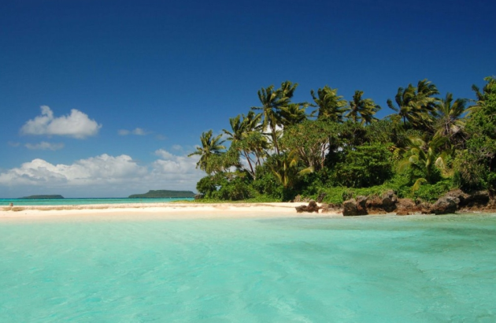

Locations
- Haamonga
- Anapekepeka
- Palace
- Hufangalupe
- Caves
About Tonga
Tonga is a unique gem in the South Pacific, renowned for being one of the only nation to have never been colonized by any foreign power. This has allowed Tongans to preserve their rich history, traditions, and cultural heritage. The islands are home to breathtaking natural wonders and remarkable historical sites that tell the story of an ancient civilisation. A visit to Tonga also offers the rare opportunity to witness the last remaining monarchy in the Pacific, with a royal lineage that has remained unbroken for thousands of years. Known as the "Friendly Islands," Tonga welcomes you with warm hospitality for an unforgettable island getaway. Please visit our pages to see images of Tonga.